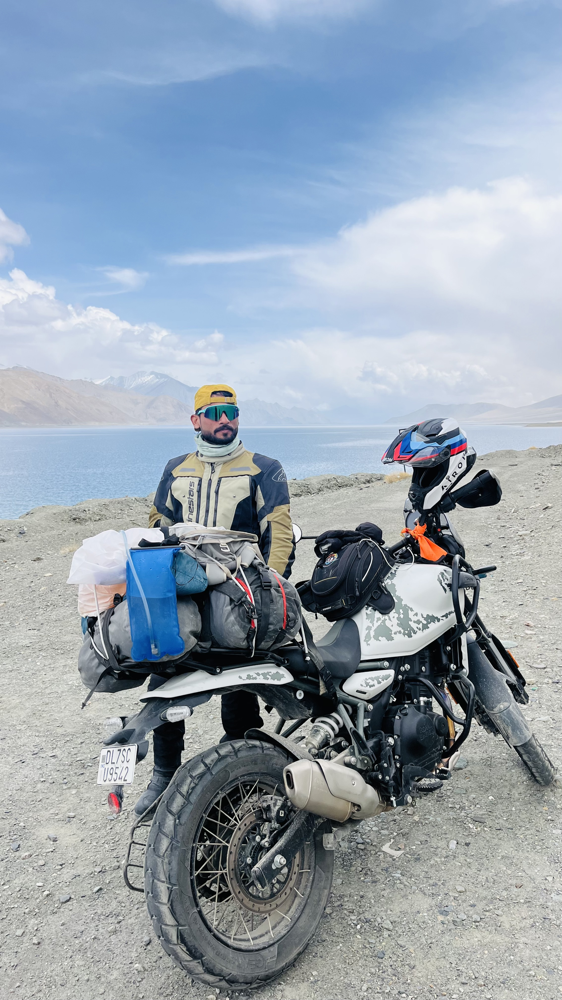
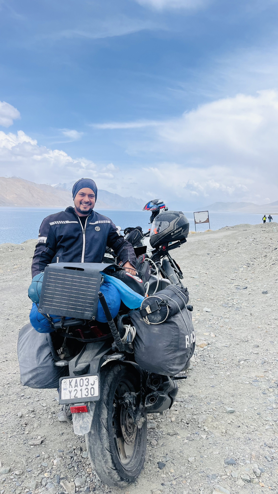

Amardeep (AD)
Rider • Storyteller • Filmmaker
I've been riding for the last 18 years. It didn't start with anything big—just a simple 100cc motorcycle, the kind most riders begin with. Back then it was simply about getting from one place to another, but somewhere along the way, the ride became something much more.
What keeps me riding isn't speed or distance—it's the experience. Being out there, surrounded by mountains where the sound of the engine fades into the background and all that remains is the road, the wind and a quiet sense of awareness. Those moments remind me how small we are, and how beautiful the world can be.
Every ride becomes a story. The changing landscapes, the silence of the Himalayas and the unpredictability of the journey all leave something behind. As a filmmaker, I love capturing those emotions so they can be experienced long after the ride is over.
Motorcycling, for me, is more than a hobby. It's freedom, reflection and connection all at once. That's the feeling I hope every rider takes home after sharing the road with us.
Follow AD on Instagram →
Ravi
Expedition Leader • Adventure Rider • Explorer
Engineer by profession and wanderer by passion. Hard core nature lover, love to wander in mountains, pluviophile. Spanning maps , photography and bike ride are my get aways from city life.
In search of peace of mind and soul I have been to some spectacular places both in terms of jaw dropping beauty and satisfaction to mind. Hearing your echoes in Himalayas, roaming in lush green Meghalaya, stepping into the chilled out lakes in Ladakh, stargazing in never ending horizons of the Great Runn-of-Kutch and the list go on.
I would love if I can help you to experience these soul satisfying moments. Pick a place you like and I promise you to return with a everlasting memory in your life.
Follow Ravi on Instagram →